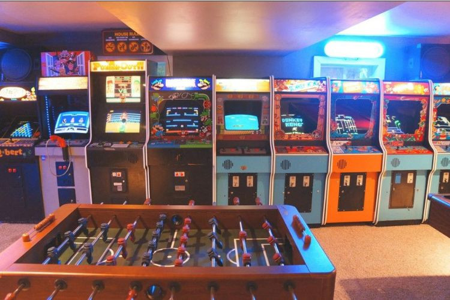

Tecnologia Sustentável: Inovação a Favor do Planeta
A tecnologia sustentável busca desenvolver soluções que minimizem os impactos ambientais,
promovendo o uso eficiente dos recursos naturais.
Desde a criação de painéis solares mais acessíveis até o uso de materiais recicláveis na
produção de eletrônicos, a inovação verde é um passo essencial para um futuro mais equilibrado.
Grandes empresas do setor tecnológico estão adotando práticas sustentáveis, como
o reaproveitamento de componentes e a redução da emissão de carbono em suas operações.
O objetivo é claro: unir o avanço tecnológico à responsabilidade ambiental.
Os Benefícios do Exercício Regular para a Saúde
A prática regular de atividades físicas é fundamental para manter o corpo e a mente saudáveis.
Exercícios ajudam a prevenir doenças cardíacas, controlar o peso e melhorar o humor,
graças à liberação de endorfinas — os hormônios do bem-estar.
Além disso, o esporte promove disciplina, socialização e autoconfiança, sendo uma excelente
ferramenta para o equilíbrio emocional. Não importa a idade ou o tipo de atividade:
o importante é se manter em movimento!

A Cultura dos Videogames: Mais do que Diversão
Os videogames se tornaram uma das formas de entretenimento mais populares do mundo,
ultrapassando o cinema e a música em receita. Mas além da diversão, os jogos eletrônicos
também são uma poderosa forma de arte e expressão cultural.
Hoje, comunidades de gamers movimentam bilhões e conectam pessoas globalmente.
O eSports transformou jogadores em atletas profissionais e os jogos indie
mostram que criatividade e narrativa podem gerar experiências únicas.